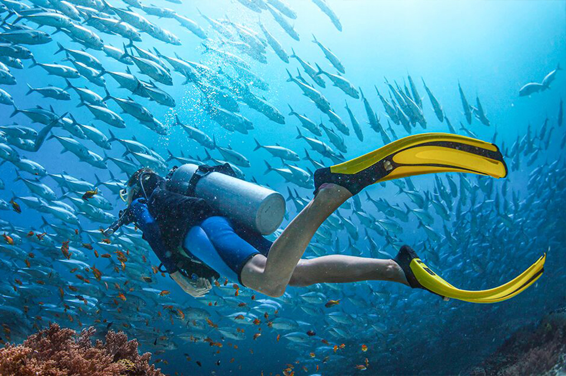

equipment
Mask
A good snorkel /scuba mask has many options to choose from. Tempered glass, soft silicone rubber and adjustable strap to name a few.
Scuba Tank
Typically made of steel or aluminum, a scuba cylinder’s size and pressure rating determines its capacity of compressed gas.
Buoyancy Control Device (BCD)
Use less energy and gain better control while hovering weightless underwater.

Fins
Designed for efficiency and control, the right fin helps both scuba divers and freedivers move through the water efficiently.
Dive Watches
A good sports dive watch comes in a variety of styles, is water resistant and has a depth rating of at least 100 metres (330 feet).
Wet Suits
There are 4 different wetsuit styles: One Piece, Two Piece, Shortie (short sleeves and legs) and Semi Dry. Wetsuits provide insulation and help protect from cuts, scrapes and stings.
Dry Suits
Designed for cooler waters, dry suits create a seal around your wrists and neck to keep the water out and keep you dry.
Dive Light
Bright, brighter, brightest. Day or night, a dive light helps when peeking around coral or viewing inside a wreck.
Dive Knife
A good dive knife is the best tool a diver can have. From stainless steel to titanium, a good sharp or serrated edge can help in any entanglement.